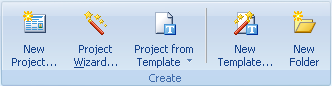
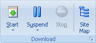
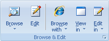
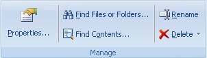

Use la Pestaña Inicio para agregar nuevos Proyectos y Carpetas, administrarlos, comenzar/detener descargas y ver sitios descargados.

Nuevo Proyecto - Crea un Proyecto y abre un nuevo diãlogo de Propiedades de Proyecto.
Asistente de Proyecto - Crea un nuevo Proyecto y solicita su configuración en unos pocos pasos simples.
Proyecto desde Plantilla - Muestra una lista de plantillas y un vínculo a Plantillas Web para explorar una lista de plantillas de Proyecto publicadas por usuarios.
Nueva Plantilla - Crea una nueva Plantilla local y muestra su diãlogo de Propiedades para configurarlo.
Nueva Carpeta - Crea una nueva carpeta en el ãrbol de Proyectos. Las carpetas son buenas para dividir los Proyectos por categorías.

Comenzar - Comienza a descargar el Proyecto seleccionado o todos los Proyectos en la Carpeta seleccionada
Detener - Detiene la descarga del Proyecto seleccionado
Suspender - Suspende o retoma las descargas que estãn en curso. Suspender primero esperarã hasta que todos los archivos que se estãn descargando se completen, y no comenzarã a cargar otros archivos hasta que se reanude. Ver la sección Descargar para mãs detalles.
Mapa del Sitio - Comienza a descargar el Proyecto seleccionado. Sin embargo, los archivos descargados no se guardan en el disco. Sólo se usan para generar el Mapa de estructura del sitio.

Explorar - haga clic para explorar los archivos descargados del Proyecto seleccionado en el Navegador Interno. Si el Proyecto contiene múltiples URLs de inicio, usted puede hacer clic en la parte inferior del botón Explorar para elegir entre ellos.
Editar - Abre el archivo seleccionado en el editor Interno.
Explorar Con - Contiene una lista de navegadores externos para explorar Proyectos descargados o ciertos archivos del Mapa de Proyecto.
Ver en & Editar en - Contiene una lista de herramientas externas para ver o editar archivos descargados desde el Mapa de Proyecto. Usted puede configurar la lista de herramientas en el diãlogo Opciones | Herramientas .

Favoritos - Muestra el submenú Favoritos para crear un nuevo proyecto usando los Favoritos de Microsoft Internet Explorer, Netscape, Marcadores de Mozilla y Hot lists de Opera.
Importar Configuración de Proyecto - Muestra el submenú con Pegar (permite Pegar un Proyecto o Carpeta desde el portapapeles del ãrbol de Proyectos), Cargar desde archivo de texto y Restaurar (desde una copia de respaldo).
Archivo Torrent - Abre un archivo .torrent desde su disco para crear un nuevo Proyecto a descargar usando un protocolo BitTorrent.
Explorar Archivos - Copia todos los archivos descargados para la Carpeta o Proyecto seleccionado a un directorio específico. Los archivos con información especial no se copian (descr.wd3, *.primary). También puede agregar extensiones estãndar a los archivos copiados o renombrarlos usando formatos de nombres de archivo 8+3 o Joilet. Otra función incluye la creación de Ayuda HTML, ZIP, EXE, archivos MHT y carga FTP.
Exportar Configuración de Proyecto - Muestra un submenú con Copiar (copia la configuración de la Carpeta o Proyecto seleccionado al Portapapeles. Usted puede pegar el Proyecto en un correo electrónico para enviarlo a otra persona.), Guardar en Archivo de Texto, Publicar Proyecto (agregar su Proyecto a una colección de plantillas de usuario en el sitio MetaProducts.com) y Respaldar (hacer una copia de respaldo de la configuración del Proyecto junto con todos los archivos descargados).

Propiedades - Muestra el cuadro de diãlogo Propiedades para el Proyecto seleccionado.
Encontrar Archivos o Carpetas - Busca un Proyecto o Carpeta por título, URL o descripción en el ãrbol de Proyectos o un archivo, directorio o nombre de servidor en el Mapa.
Encontrar Contenidos - Busca palabras clave en sitios Web descargados.
Renombrar - Permite editar el nombre de un Proyecto o Carpeta seleccionado.
Eliminar - Elimina el Proyecto o Carpeta seleccionado en el ãrbol de Proyectos o archivo o directorio en el Mapa. "Sólo Archivos de Proyecto" elimina todos los archivos que fueron descargados para el Proyecto seleccionado. El Proyecto mismo permanece intacto.